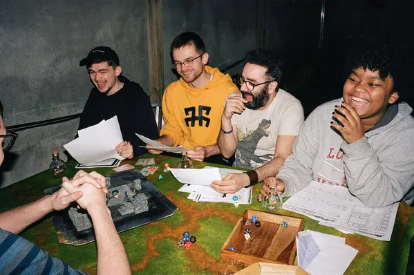

What Is Dungeons and Dragons?
Dungeons and Dragons at its core is a roleplaying game that is mostly played in tabletop settings. Roleplaying meaning that you get to create your character and act out their choices through how you think they would react to situations. Tabletop is just another word for games that are played on a table, just like your classics such as Monopoly or chess.
The game is played by having a Game Master describe a scenario and have their player react in the way they believe their created character would. The tabletop playing comes in when players make these decisions; just because you want your character to do something doesn't mean it is a guarantee. Rolling dice determines how well or how poorly you react to these situations.
Gameplay Pillars
The goal of Dungeons and Dragons is to take players on an adventure while the Dungeon Master guides and directs them. Everything that happens in this is considered the gameplay, which can be broken down into three pillars of the adventure. Ultimately, the choice is up to you how to go through the game, and no one pillar is more important than the other; all adventures will involve all three in some way.
Exploration
Exploration is how players move through the world and interact with the objects within. This can be as simple as walking through a forest or finding a hidden temple with traps and treasure.
Social Interaction
Dungeons and Dragons is a very social game; what your character does determines the outcome of an adventure. Social interactions in the game can be asking for directions to demanding a gang of goblins quit harassing a nearby village. The possibilities of social interactions are nearly endless!
Combat
Many people want to play Dungeons and Dragons for the fighting side of it, and who wouldn't? You are given the chance to partake in fights as simple as a tavern brawl or as large as taking on a humongous dragon.